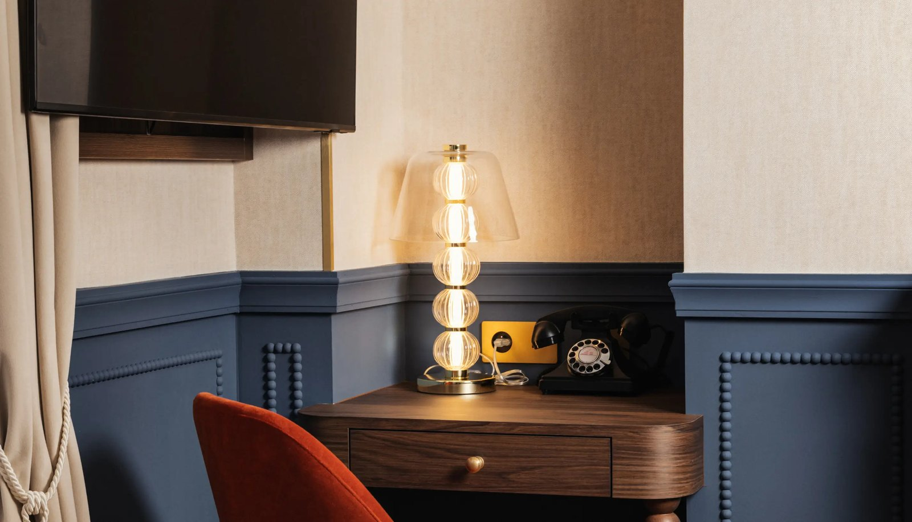
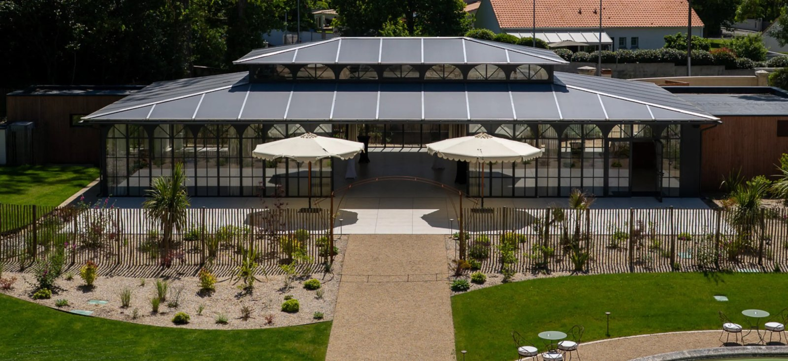
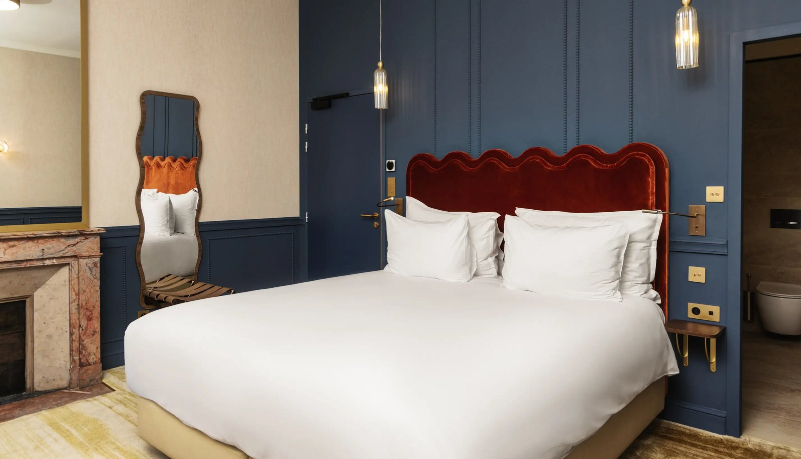
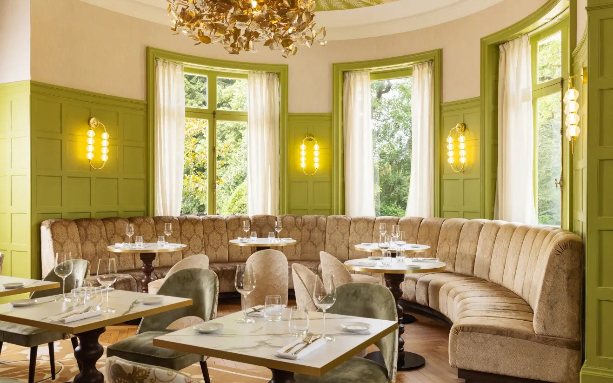
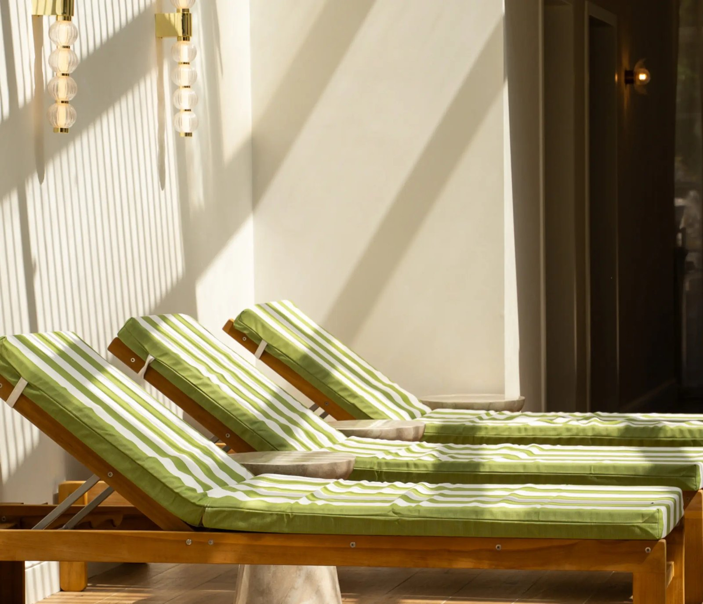

Château du Portereau : l'hôtel 4 étoiles qui réinvente Nantes
À quinze minutes de Nantes, à Vertou, le Château du Portereau a ouvert ses portes le 12 mai 2026 après une transformation de 10 millions d'euros pilotée par le groupe Ben Touch. Cinq siècles d'histoire, un domaine entre les vignobles du Muscadet et la Sèvre Nantaise, 26 chambres signées Kraft Places, une table gastronomique dans une ancienne chapelle montfortaine et un spa complet.

Le Château du Portereau vu du ciel : la verrière contemporaine posée sur la façade, la piscine extérieure à gauche, la fontaine et l'Orangerie vitrée à droite. Photo : Château du Portereau, site officiel.
TL;DR : l'essentielL'hôtel 4 étoiles que la région nantaise attendait
- Cinq siècles lisibles : rendez-vous de chasse des Lefèvre-Utile, les créateurs des biscuits LU, puis maison des missionnaires montfortains, puis siège social de Maisons du Monde pendant plus de vingt ans. Chaque époque a laissé son empreinte, et la rénovation ne l'a pas effacée.
- Une table de chef : L'Attilio Vertou, dans l'ancienne chapelle montfortaine devenue rotonde, plafond signé Olivia de Bona. Le chef Attilio Marrazzo a été formé au Four Seasons de Milan puis dans les cuisines de Joël Robuchon, avec Giulio Ierace comme chef exécutif.
- Un spa complet : le Shaman Spa réunit jacuzzi extérieur, hammam, sauna, tisanerie et deux cabines réunissables en cabine double, avec une piscine extérieure chauffée dans le parc.
Score LMHS : 9,1/10, moyenne de cinq axes de poids égal détaillée dans notre verdict. Indice Prestige Patrimonial : 4,8/5.
Cinq siècles d'histoire pour un hôtel d'exception
Le nom « Portereau » signifie « port sur eau » en vieux français, et l'embarcadère d'origine est encore visible sur la Sèvre. Au XVIe siècle, le manoir appartient à plusieurs grandes familles nantaises. Au XIXe, la famille Lefèvre-Utile, créatrice des célèbres Petits LU, en fait son rendez-vous de chasse ; leurs armoiries ornent encore aujourd'hui les cheminées extérieures du château. Au XXe siècle, le domaine est offert aux Missionnaires Montfortains. De 2003 à 2024, il devient le siège social de Maisons du Monde, pendant plus de vingt ans.
En 2024, le groupe angevin Ben Touch (Benjamin Erisoglu) l'acquiert et engage une transformation de près de 10 millions d'euros. L'hôtel a été inauguré le 12 mai 2026, quatrième adresse de la collection hôtelière du groupe, et l'opération a créé une quarantaine d'emplois. La décoration est signée Kraft Places, studio parisien d'architecture d'intérieur.

La verrière monumentale posée sur la façade abrite la réception et le grand escalier. Photo : Château du Portereau, site officiel.
Chaque époque a laissé une empreinte lisible dans l'architecture et le décor : les initiales LU sur les cheminées extérieures, la chapelle montfortaine devenue rotonde de restaurant, le puits historique redécouvert pendant les travaux. C'est ce palimpseste vivant qui rend le Château du Portereau unique en son genre, et c'est aussi ce qu'un concurrent ne peut pas fabriquer.
Un domaine entre Muscadet et Sèvre Nantaise
Trois hectares entre vignobles du Muscadet et rives de la Sèvre Nantaise. Des platanes de plus de 300 ans et un chêne bicentenaire rythment le parc. Le domaine comprend un pigeonnier reconverti en chenil, d'anciennes écuries transformées, un puits historique, la fontaine d'origine et son jet de six mètres, l'Orangerie (200 m², jusqu'à 400 personnes pour mariages et séminaires) et une guinguette au bord de la Sèvre. La piscine extérieure chauffée est réservée aux clients de l'hôtel.

L'Orangerie, 200 m² sous verrière, jusqu'à 400 personnes en réception. Photo : Château du Portereau, site officiel.
La verrière monumentale posée sur la façade, monogramme « C » et « P » entrelacés, abrite la réception et le grand escalier. Depuis l'étage, la vue embrasse l'ensemble du domaine : jardins soignés, fontaine, piscine, espaces de détente. Un cottage pour dix personnes complète l'offre d'hébergement pour les groupes souhaitant une formule gîte.
Indice Prestige Patrimonial LMHS : 4,8/5. Indice thématique propre à cette page, comme l'Indice Vue de notre avis londonien. Justification : authenticité architecturale préservée sur cinq siècles, cohérence décorative avec l'histoire LU et montfortaine, intégration paysagère dans le vignoble nantais, continuité historique assumée et lisible à chaque étape du domaine.
26 chambres et suites : du cocon classique à la suite prestige

Une chambre Deluxe : boiseries bleu nuit, tête de lit en velours rouge festonné, cheminée de marbre conservée. Photo : Château du Portereau, site officiel.
26 chambres et suites réparties entre le château historique (12 unités) et le Pavillon (14 unités, anciennes écuries). Le studio Kraft Places a travaillé une palette cohérente : murs bleu nuit ou vert forêt, têtes de lit en velours rouge festonné, poutres apparentes dans les étages supérieurs, bois patiné, marbre veiné, touches de laiton, papiers peints à motifs délicats. Chaque catégorie offre une ambiance distincte ; toutes restent dans l'univers du domaine.
Les chambres du château
Cinq catégories couvrent l'ensemble du spectre, de 16 à 37 m². Les Classiques (16-21 m²) sont un cocon apaisant pour une à deux personnes, avec vue sur le parc ou la fontaine. Les Supérieures (20-21 m²) misent sur une atmosphère lumineuse et raffinée, mêmes vues. Les Deluxe (21-26 m²) offrent un espace généreux ouvert sur la Sèvre ou l'Orangerie, pour jusqu'à trois personnes. Les Junior Suites (26-31 m²) disposent d'un espace salon et de vues sur le domaine, pour jusqu'à quatre personnes. La Junior Suite Prestige (34-37 m²) est la plus spacieuse : elle ouvre sur la Sèvre, le parc, l'Orangerie ou la fontaine selon l'orientation, également pour quatre personnes.
| Catégorie | Surface | Capacité | Vue |
|---|---|---|---|
| Classique | 16-21 m² | 1 à 2 | Parc ou fontaine |
| Supérieure | 20-21 m² | 1 à 2 | Parc ou fontaine |
| Deluxe | 21-26 m² | 1 à 3 | Sèvre ou Orangerie |
| Junior Suite | 26-31 m² | 1 à 4 | Domaine |
| Junior Suite Prestige | 34-37 m² | 1 à 4 | Sèvre, parc, Orangerie ou fontaine |
Surfaces et capacités publiées par l'établissement, relevées le 6 août 2026.
Les cheminées de marbre d'origine ont été conservées dans les chambres du château, ce qui n'était pas acquis après vingt ans de bureaux. Le plafond de l'une des salles du restaurant est signé de l'artiste Olivia de Bona, dont le travail mêle marqueterie de paille, gravure et papier découpé.
Le Pavillon : les anciennes écuries sublimées
14 chambres dans les anciennes écuries transformées par Kraft Places. L'architecture est préservée : charpentes, volumes, caractère équestre sublimé plutôt qu'effacé. Même palette décorative que le château, mais atmosphère plus intime et contemporaine. Accès direct au parc et à la piscine, et c'est également dans le Pavillon qu'est installé le spa. Idéal pour les familles ou les groupes souhaitant une certaine indépendance. La possibilité de louer un cottage pour dix personnes en formule gîte prolonge cette logique d'autonomie.
L'Attilio Vertou : la table gastronomique signée Attilio Marrazzo

La rotonde de L'Attilio Vertou, dans l'ancienne chapelle des Montfortains : boiseries vert amande, banquette continue, lustre doré. Photo : Château du Portereau, site officiel.
Attilio Marrazzo est napolitain, formé aux Four Seasons Milan sous Sergio Mei, puis dans les cuisines de Joël Robuchon à Paris dès 2006. Il dirige la table, et Giulio Ierace y tient le poste de chef exécutif. La salle est installée dans l'ancienne chapelle des Montfortains transformée en rotonde : boiseries vert amande, hautes fenêtres cintrées sur le parc, banquette continue en velours, et un plafond signé Olivia de Bona, l'une des plus belles pièces de l'hôtel.
Cuisine française contemporaine aux accents italiens, adossée aux producteurs locaux, dont la carte évolue au fil des saisons et des récoltes. Le restaurant ouvre en salle comme en terrasse aux beaux jours.
La guinguette au bord de la Sèvre prolonge l'expérience dans un registre plus décontracté : vins du vignoble nantais, cocktails et mocktails, planches de charcuteries et de fromages, créations de saison, sous les arbres centenaires. Elle est ouverte en saison, tous les jours de 17 h à 22 h, et se privatise jusqu'à 150 personnes en cocktail. Un lieu vivant, ouvert à tous.
Le Shaman Spa : un refuge au cœur du domaine

L'espace détente du Shaman Spa, installé dans le Pavillon. Photo : Château du Portereau, site officiel.
Le Shaman Spa (réseau Ben Touch Group) est installé dans le Pavillon, à l'écart du bâtiment principal, et ouvert tous les jours de 10 h à 19 h. Équipements : jacuzzi extérieur, hammam, sauna, tisanerie, solarium, terrasse plein sud, deux cabines de soins individuelles réunissables en cabine double pour les soins en duo, et une piscine extérieure chauffée dans le parc. L'espace détente accueille six personnes au maximum, afin de garantir une atmosphère calme et intimiste.
Soins : massages sur mesure, réflexologie plantaire et palmaire, soins visage, gommages, rituels signature dont le Souffle de soie, massage relaxant conduit au foulard de soie. Les produits sont ceux de la maison française Omnisens. Durées : de l'express de 20 minutes aux rituels immersifs de 90 minutes.
| Prestation | Durée | Tarif |
|---|---|---|
| Espace détente, clients extérieurs | 60 min | 40 € |
| Soins courts (réflexologie, dos, cuir chevelu) | 20 min | 55 € |
| Massages et soins visage | 30 min | 65 € |
| Massage sur mesure, maternité | 45 min | 85 € |
| Massages et rituels d'une heure | 60 min | 110 € |
| Rituels longs, soin anti-âge | 90 min | 165 € |
Carte des soins de l'établissement, relevée le 6 août 2026. À partir de 110 € de soin, l'accès de 60 minutes à l'espace détente est offert.
L'accès à l'espace détente se fait sur réservation, par créneaux de 60 minutes, avec des arrivées possibles toutes les quinze minutes. Les clients extérieurs sont acceptés du lundi au vendredi de 10 h à 19 h, hors vacances scolaires et jours fériés, sur rendez-vous uniquement, à 40 € les soixante minutes. Atmosphère : refuge lumineux, silence, chaleur, lumière naturelle. La terrasse exposée plein sud et le jacuzzi en plein air prolongent l'expérience au cœur de la nature.
Notre verdict LMHS
Score LMHS : 9,1/10. Indice Prestige Patrimonial LMHS : 4,8/5. Le Château du Portereau réunit ce que peu d'hôtels de la région nantaise offrent simultanément : une excellence patrimoniale sur cinq siècles lisible dans l'architecture, une gastronomie de chef formé chez Robuchon, un spa complet avec piscine chauffée, et un domaine remarquable à un quart d'heure d'une métropole. Pour qui ? Les couples en week-end, les familles, les amateurs de patrimoine et de vignoble nantais, les gastronomes, les professionnels en séminaire.
Conformément à notre méthode, la note d'un avis consacré à un seul établissement est la moyenne simple de cinq axes de poids égal. Vous pouvez la recalculer.
| Axe | Score | Commentaire |
|---|---|---|
| Patrimoine et décor | 9,5/10 | Cinq siècles restés lisibles, chapelle devenue rotonde, verrière greffée sans écraser la façade, plafond d'Olivia de Bona. Kraft Places a transformé sans trahir. |
| Chambres | 9,0/10 | 26 clés, palette cohérente d'une catégorie à l'autre, cheminées d'origine conservées, Pavillon de plain-pied sur le parc. Rien au-dessus de 37 m² toutefois. |
| Restauration | 9,5/10 | Chef formé au Four Seasons Milan puis chez Robuchon, chef exécutif dédié, plus belle salle du domaine, guinguette en saison au bord de la Sèvre. |
| Spa et piscine | 8,5/10 | Parcours complet et produits Omnisens, piscine extérieure chauffée. L'espace détente est volontairement limité à six personnes, il faut réserver son créneau. |
| Rapport prix-expérience | 9,0/10 | Spa correctement tarifé, 40 € l'heure de détente pour un extérieur. L'établissement ne publie en revanche aucune grille tarifaire d'hébergement. |
Score fiche LMHS : 9,1 / 10 · (9,5 + 9,0 + 9,5 + 8,5 + 9,0) ÷ 5 = 9,1 · Relevés du 6 août 2026.
Le mot de LucasTransformer sans trahir
Ce qui frappe dans ce dossier, c'est la cohérence. On ne sent pas la rénovation plaquée sur un vieux bâtiment : chaque couche d'histoire est assumée, intégrée, racontée. Les armoiries LU sur la cheminée, la chapelle montfortaine devenue rotonde de restaurant, la verrière qui signe l'entrée sans écraser la façade. Un château qui sert vingt ans de siège social ressort généralement avec des faux plafonds et des goulottes ; celui-ci a gardé ses cheminées de marbre. Kraft Places a fait un travail rare : transformer sans trahir. Et la cuisine d'Attilio Marrazzo dans ce cadre, c'est une évidence. Cet hôtel n'a pas besoin d'inventer une identité, il en a déjà cinq. Reste que je n'y ai pas encore dormi, et que je ne vais donc pas vous raconter le petit-déjeuner : cet avis est documentaire, et nous irons vérifier sur place.
Lucas Lecoq, rédacteur en chef
Questions fréquentes sur le Château du Portereau
Où se trouve le Château du Portereau ?
À Vertou, à quinze minutes en voiture du centre de Nantes (Le Portereau, 44120 Vertou). Situé entre les vignobles du Muscadet et les rives de la Sèvre Nantaise. Accueil : +33 2 85 52 81 20.
Combien de chambres compte le Château du Portereau ?
26 chambres et suites en 5 catégories (Classique, Supérieure, Deluxe, Junior Suite, Junior Suite Prestige), de 16 à 37 m², réparties entre le château historique (12 unités) et le Pavillon (14 unités). S'y ajoute un cottage privatif pouvant accueillir dix personnes.
Y a-t-il un restaurant au Château du Portereau ?
Oui, le restaurant L'Attilio Vertou, dans l'ancienne chapelle des Montfortains, est dirigé par le chef Attilio Marrazzo, formé au Four Seasons de Milan puis dans les cuisines de Joël Robuchon, avec Giulio Ierace comme chef exécutif. Cuisine française contemporaine aux accents italiens, produits locaux et de saison. Une guinguette au bord de la Sèvre complète l'offre en saison, tous les jours de 17 h à 22 h.
Le Château du Portereau dispose-t-il d'un spa ?
Oui, le Shaman Spa propose jacuzzi extérieur, hammam, sauna, tisanerie, solarium, deux cabines de soins réunissables en cabine double, et une piscine extérieure chauffée dans le parc. Ouvert tous les jours de 10 h à 19 h. L'accès à l'espace détente se fait sur réservation, par créneaux de 60 minutes, pour six personnes au maximum. Les soins vont de 55 € (20 min) à 165 € (90 min), avec les produits Omnisens ; à partir de 110 € de soin, l'heure d'espace détente est offerte. Les clients extérieurs sont reçus du lundi au vendredi, hors vacances scolaires et jours fériés, à 40 € les 60 minutes.
Peut-on organiser un mariage ou un séminaire au Château du Portereau ?
Oui, l'Orangerie, salle vitrée de 200 m² ouverte sur le parc, peut accueillir jusqu'à 400 personnes pour mariages, séminaires ou événements privés. La guinguette au bord de la Sèvre se privatise jusqu'à 150 personnes en cocktail, et les 26 chambres plus le cottage permettent de loger sur place.
Les animaux sont-ils acceptés au Château du Portereau ?
Oui, l'établissement accueille les animaux, et le pigeonnier du domaine a été reconverti en chenil. L'établissement ne publiant pas de grille détaillée (poids maximum, supplément), confirmez les conditions à la réservation auprès de l'accueil.
Avez-vous séjourné au Château du Portereau ?
Non. Cet avis est documentaire : il repose sur les pages officielles de l'établissement, sa carte des soins, la fiche du groupe propriétaire et la presse économique régionale, relevés le 6 août 2026. Nous le disons plutôt que de le laisser croire. La note de 9,1/10 est la moyenne simple des cinq axes publiés plus haut. Aucun partenariat, aucune affiliation, aucun séjour offert.
Méthode et sources
Avis établi selon la fiche LMHS : cinq axes de poids égal (patrimoine et décor, chambres, restauration, spa et piscine, rapport prix-expérience), notés sur 10, dont la moyenne simple donne le score global. L'Indice Prestige Patrimonial, noté sur 5, est un indice thématique propre à cette page : authenticité architecturale, cohérence décorative avec l'histoire du lieu, intégration paysagère et continuité historique lisible. Aucun séjour de contrôle n'a été effectué pour cet avis, et nous ne prétendons pas le contraire : l'analyse repose sur les pages officielles de l'établissement, sur sa carte des soins, sur la fiche publiée par le groupe propriétaire Ben Touch et sur la presse économique régionale, relevées le 6 août 2026. Sont vérifiés et publiés : la superficie du domaine, la répartition 12 chambres au château et 14 au Pavillon, le cottage pour dix personnes, les cinq catégories de 16 à 37 m², l'ouverture le 12 mai 2026, l'investissement de près de 10 millions d'euros, les 200 m² et 400 personnes de l'Orangerie, l'intégralité de la grille tarifaire du Shaman Spa et ses conditions d'accès. Aucun tarif d'hébergement n'est publié par l'établissement, aucun n'est donc cité ici. Aucun partenariat commercial, aucune affiliation, aucun séjour offert. Photographies : Château du Portereau, site officiel.
Sources utiles
- Site officiel du Château du Portereau
- Le Domaine, l'histoire du lieu et les éléments du parc
- Le Shaman Spa et sa carte des soins
- L'Attilio Vertou
- Ben Touch Group, fiche du Château du Portereau
- Le Journal des Entreprises, l'ouverture du 12 mai 2026
- TendanceHôtellerie, le communiqué de presse d'ouverture
- Yonder, l'hôtel du mois de juillet 2026
À lire aussi
- Notre palmarès des meilleurs hôtels et spas de France 2026
- Hôtels de charme en Bretagne : 10 maisons d'exception
- The Romanos, Costa Navarino : le luxe grec en Messénie, un autre avis en fiche LMHS
- Château Saint-Jean, Montluçon : la commanderie templière devenue Relais & Châteaux, autre château documenté sans séjour de contrôle
- Hôtel avec spa privatif : 12 adresses testées, du chalet au château
- Meilleurs hôtels 5 étoiles en France : les 10 palaces hors Paris
- Notre méthode, les grilles de notation et les règles d'indépendance